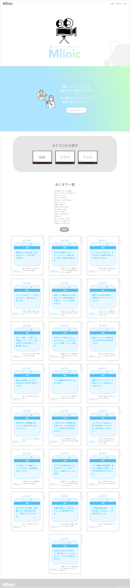
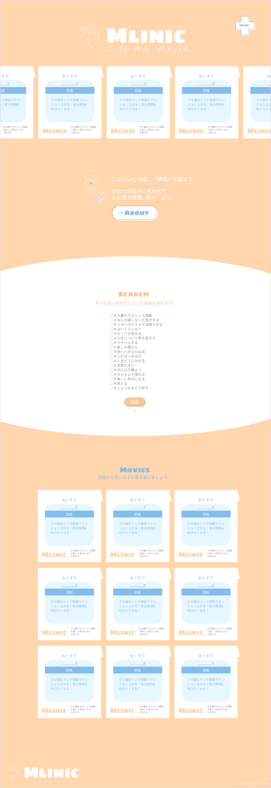

◆オリジナルサイト
オススメの映画を投稿するオリジナルサイトを作りました。
Story
サービスが生まれた経緯
-
総合的な映画レビューサイトと差別化
するため、尖ったコンセプトに -
映画には人を元気にする力があるので
薬に例えて処方するコンセプトに -
タイトルをあえて隠し、得られる効果
から映画を探せるように
Point
こだわった点
- 薬・クリニックっぽい世界観
-
レビューの面倒さを軽減するため
タグをたくさん用意 - タグ検索で探しやすく


Before
-
「Movie」×「Clinic」×「無理」で、メンタル
無理なときの映画処方クリニック「Mlinic」 -
クリニックのような水色のグラデーションを
イメージカラーに - ロゴマークやカテゴリに映画っぽさを
- 映画をひとつずつお薬の袋のデザインに
- いいねは「おくすり手帳に登録」
-
タイトルはあえて隠して、得られる効能と
タグから探す -
タグは「泣いてスッキリ」「心がぽっかぽか」
などわかりやすく楽しい言葉に
After
-
Beforeはクリニック感が強すぎる・水色で
冷たい印象なので、温かいオレンジを基調に - 手書きイラスト・ゆるいフォントで優しい印象に
- メニューを十字にしてクリニック感を表現
-
メインビジュアルに映画の処方袋を持ってくる
ことでサイトの内容がすぐわかるように - 薬の袋の水色を淡く優しい色に変更
-
映画・ドラマ・アニメのカテゴリを辞めて、
映画一本に絞ることでわかりやすく簡単に - タイトルはフォントを変えてメリハリを
- 余白を増やして洗練させ、圧迫感も無いように